Paris 1er — Étienne Marcel
Un appartement aux ossatures style Eiffel, mandat : le transformer en open space pour une agence de communication sans perdre son âme. Les câbles disparaissent dans la structure. L'intimité existe sans murs. La chaleur tient malgré le plateau. Flex office sans place attitrée — l'espace s'adapte à chaque présence, budget serré, résultat sans compromis.
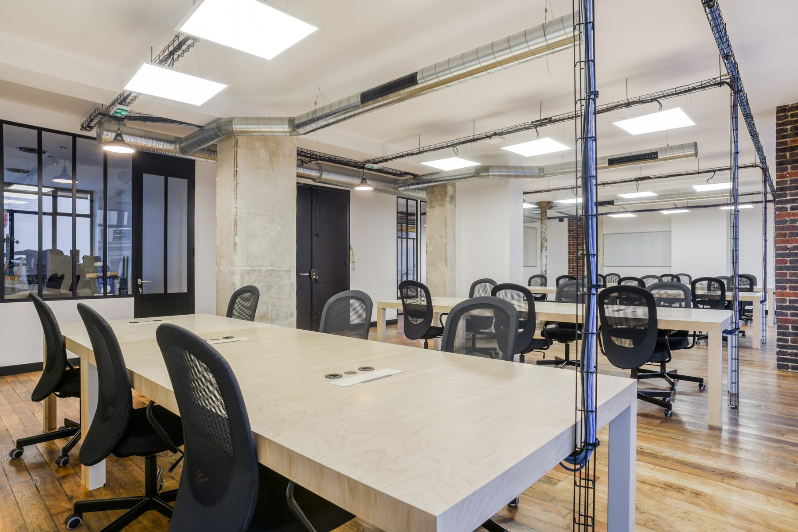
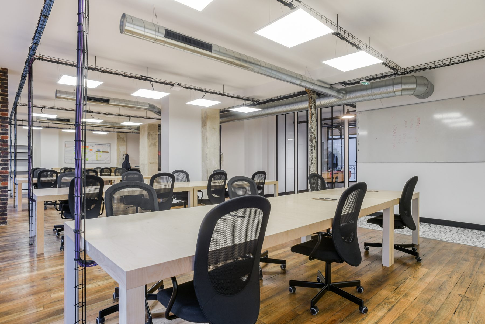
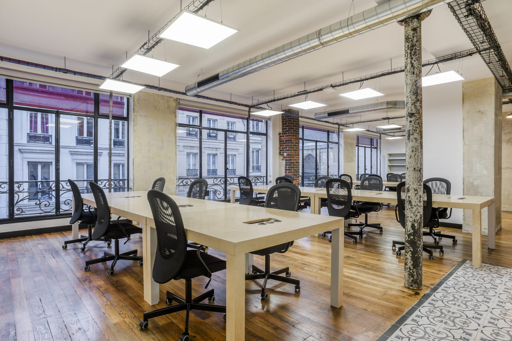
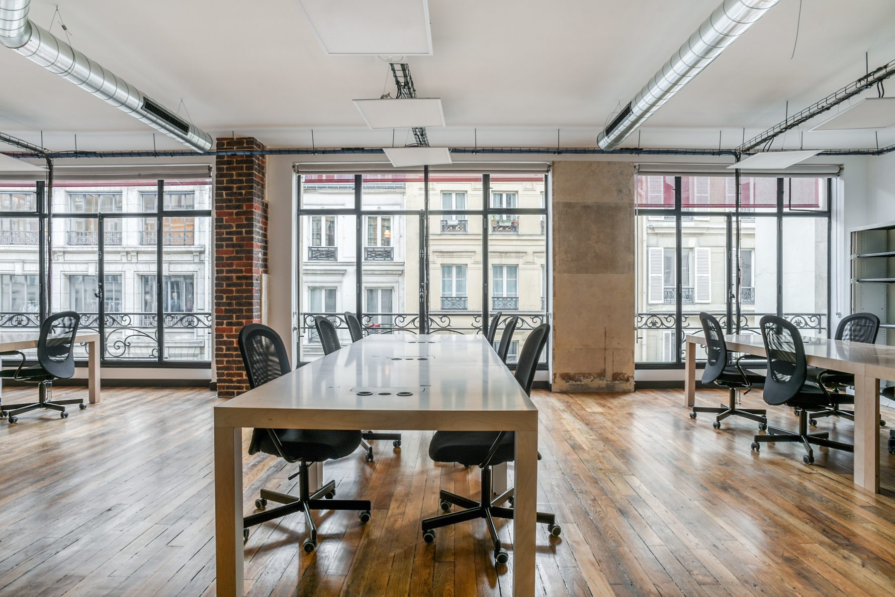
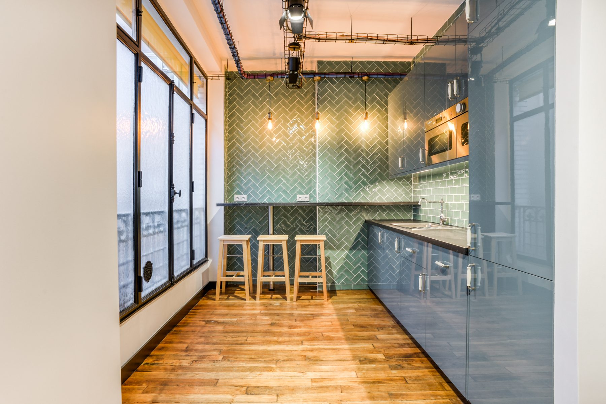
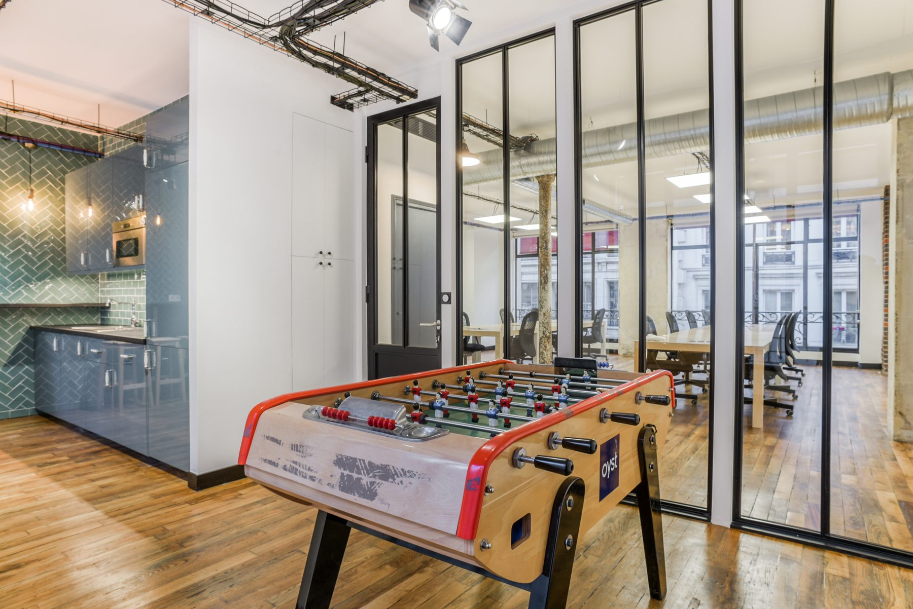
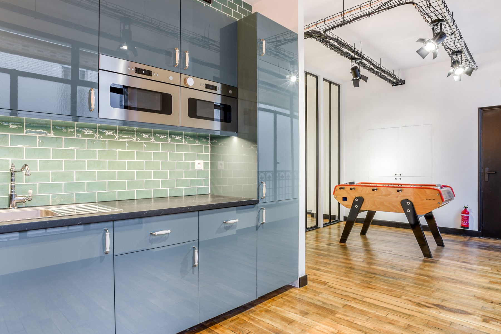
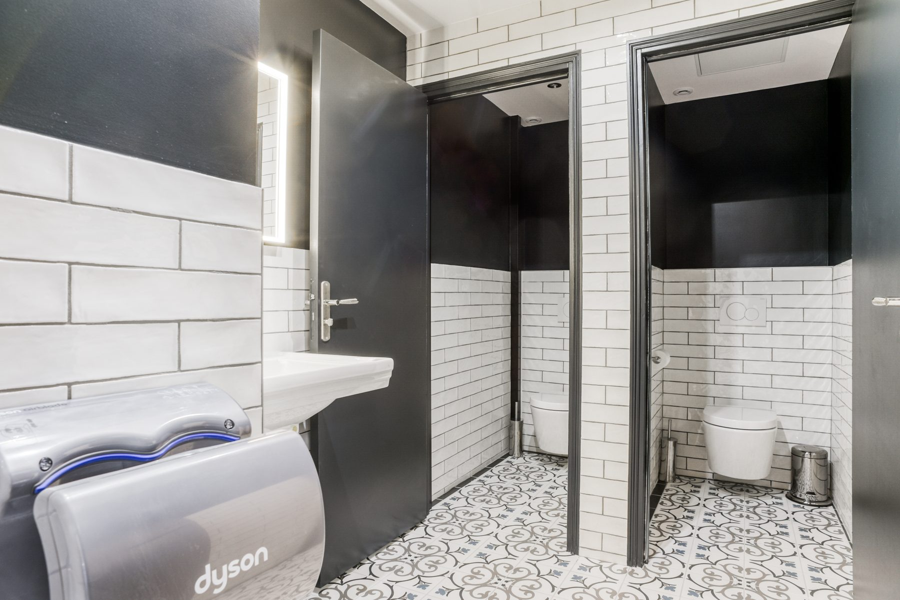
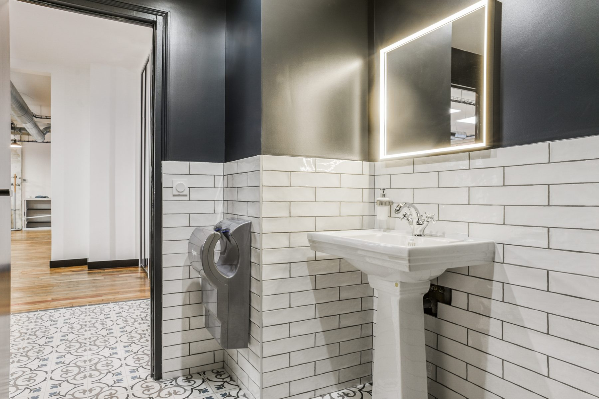
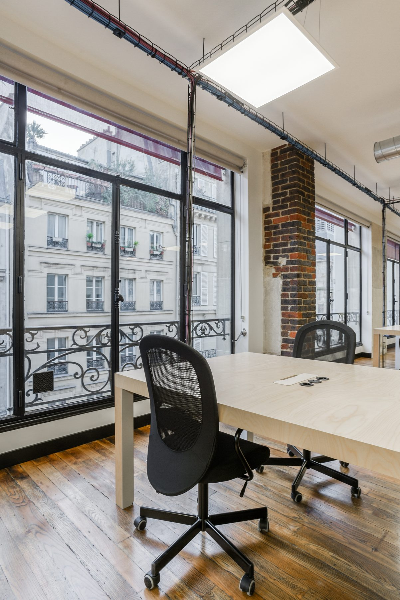
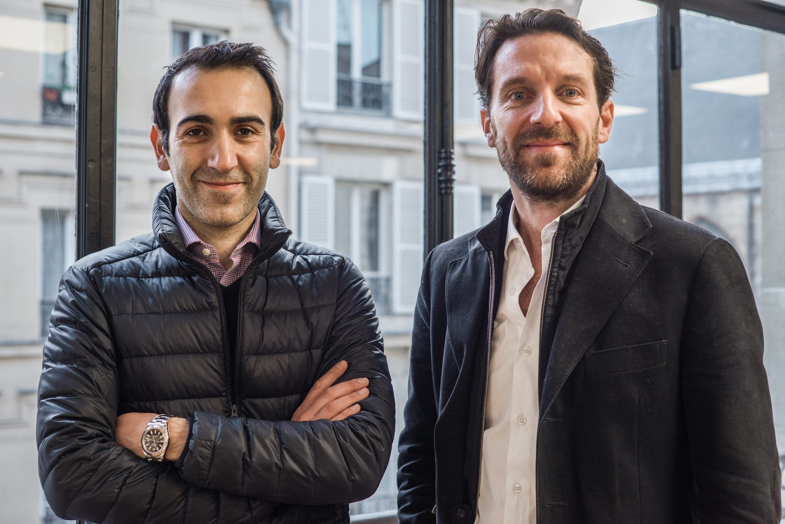
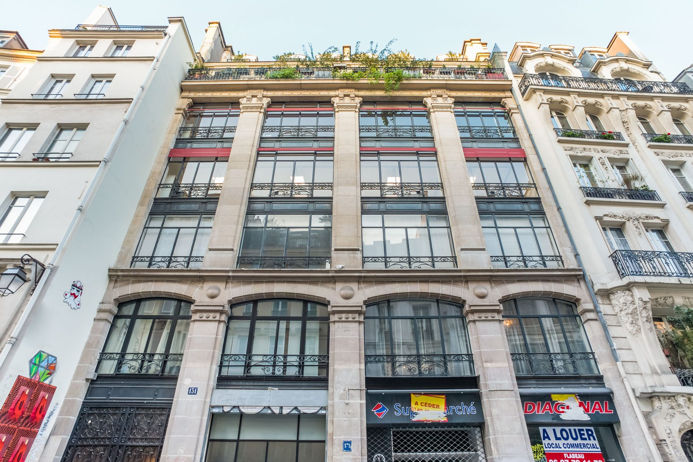
Le quartier d'Étienne Marcel a gardé les immeubles de confection du XIXe siècle : ossatures métalliques rivetées, plateaux profonds, grandes baies destinées à éclairer des ateliers. Transformer l'un de ces plateaux en espace de travail pour une agence de communication posait une question simple et difficile : comment installer une entreprise contemporaine sans effacer ce qui fait la valeur du lieu. La réponse a consisté à ne rien masquer — ni les colonnes, ni les poutres, ni le parquet.
Un open space vit mal avec des câbles apparents. Ici, les réseaux passent dans la structure existante et les gaines suivent le rythme des poutres, si bien que l'œil ne les lit plus comme un ajout. Les longues tables partagées sont posées dans l'axe des colonnes, non contre les murs : la circulation reste libre sur tout le plateau, et chaque poste garde une fenêtre en vis-à-vis.
Les salles de réunion sont fermées par des cloisons vitrées à ossature noire. Elles arrêtent le son sans arrêter la lumière ni le regard, et laissent le plateau se lire d'un bout à l'autre. Le vocabulaire est celui de l'atelier : profilés fins, verre clair, quincaillerie apparente — un registre qui appartient déjà à l'immeuble et qu'il suffisait de prolonger.
Un lieu de travail se juge autant sur ses marges que sur ses bureaux. La cuisine d'étage est traitée en carreaux émaillés vert d'eau et laque bleu-gris, avec un bar et des tabourets ; les sanitaires jouent le carrelage métro blanc, les cloisons sombres et un sol en carreaux de ciment. Ce sont ces pièces-là, plus que le plateau, qui donnent à l'ensemble son caractère domestique.
Ce projet fait partie des aménagements de bureaux et d'espaces professionnels conduits par John Rozenblum à Paris, aux côtés de Work Space et du showroom du Marais.
Ce projet fait partie des réalisations de design d'intérieur à Paris de John Rozenblum. Pour discuter d'un projet similaire ou d'une rénovation sur mesure, prenez contact.
Un projet ?
Chaque projet commence par une conversation. Partagez votre vision — je m'occupe du reste.
Prendre contact